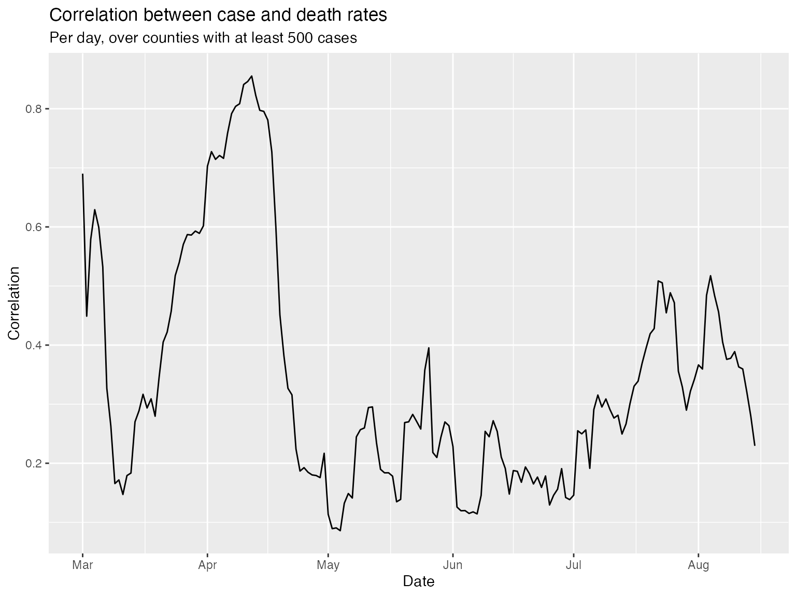
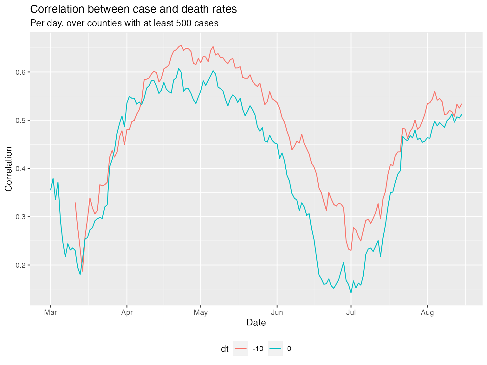
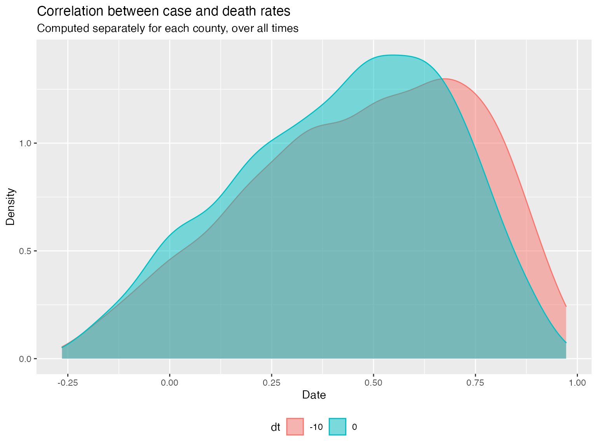
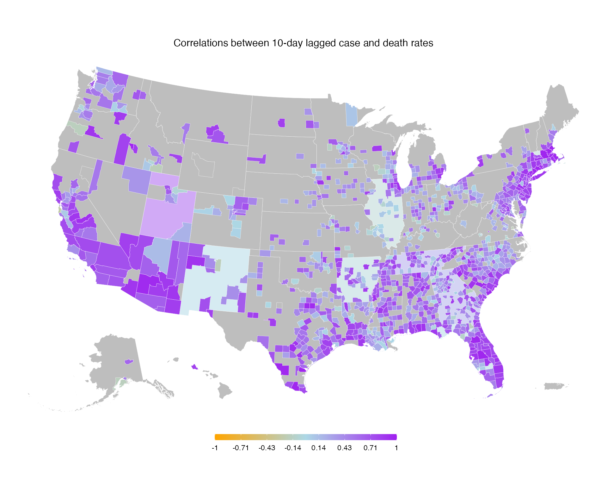
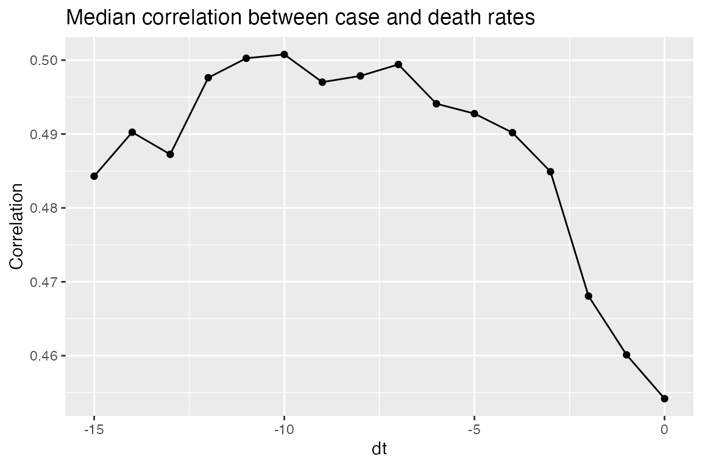

The covidcast package provides some simple utilities for exploring the correlations between two signals, over space or time, which may be helpful for simple analyses and explorations of data.
For these examples, we’ll load confirmed case and death rates. and restrict our analysis to counties with at least 500 total cases by August 15th.
library(covidcast) library(dplyr) start_day <- "2020-03-01" end_day <- "2020-08-15" iprop <- suppressMessages( covidcast_signal(data_source = "jhu-csse", signal = "confirmed_7dav_incidence_prop", start_day = start_day, end_day = end_day) ) summary(iprop)
## A `covidcast_signal` data frame with 550032 rows and 9 columns.
##
## data_source : jhu-csse
## signal : confirmed_7dav_incidence_prop
## geo_type : county
##
## first date : 2020-03-01
## last date : 2020-08-15
## median number of geo_values per day : 3274dprop <- suppressMessages( covidcast_signal(data_source = "jhu-csse", signal = "deaths_7dav_incidence_prop", start_day = start_day, end_day = end_day) ) summary(dprop)
## A `covidcast_signal` data frame with 550032 rows and 9 columns.
##
## data_source : jhu-csse
## signal : deaths_7dav_incidence_prop
## geo_type : county
##
## first date : 2020-03-01
## last date : 2020-08-15
## median number of geo_values per day : 3274# Restrict attention to "active" counties with at least 500 total cases case_num <- 500 geo_values <- suppressMessages( covidcast_signal(data_source = "jhu-csse", signal = "confirmed_cumulative_num", start_day = end_day, end_day = end_day) %>% filter(value >= case_num) %>% pull(geo_value) ) iprop_act <- iprop %>% filter(geo_value %in% geo_values) dprop_act <- dprop %>% filter(geo_value %in% geo_values)
The covidcast_cor() function is your primary way to calculate correlations. The first option we have is to “slice by time”: this calculates, for each time, correlation between the signals over all geographic locations. This is obtained by setting by = "time_value":
library(ggplot2) # Compute correlation per time, over all counties df_cor <- covidcast_cor(iprop_act, dprop_act, by = "time_value") # Plot the correlation time series ggplot(df_cor, aes(x = time_value, y = value)) + geom_line() + labs(title = "Correlation between case and death rates", subtitle = sprintf("Per day, over counties with at least %i cases", case_num), x = "Date", y = "Correlation")

The above plot addresses the question: “on any given day, are case and death rates linearly associated, over US counties?”. We might be interested in broadening this question, instead asking: “on any given day, do higher case rates tend to associate with higher death rates?”, removing the dependence on a linear relationship. The latter can be addressed using Spearman correlation, accomplished by setting method = "spearman" in the call to covidcast_cor(). Spearman correlation is highly robust and invariant to monotone transformations (it doesn’t rely on any particular functional form for the dependence between two variables).
We might also interested in interested in how case rates associate with death rates in the future. Using the dt_x parameter in covidcast_cor(), we can lag case rates back any number of days we want, before calculating correlations.
# Use Spearman correlation, with case rates and 10-day lagged case rates df_cor1 <- covidcast_cor(iprop_act, dprop_act, by = "time_value", method = "spearman") df_cor2 <- covidcast_cor(iprop_act, dprop_act, by = "time_value", dt_x = -10, method = "spearman") # Stack rowwise into one data frame, then plot time series df_cor <- rbind(df_cor1, df_cor2) df_cor$dt <- as.factor(c(rep(0, nrow(df_cor1)), rep(-10, nrow(df_cor2)))) ggplot(df_cor, aes(x = time_value, y = value)) + geom_line(aes(color = dt)) + labs(title = "Correlation between case and death rates", subtitle = sprintf("Per day, over counties with at least %i cases", case_num), x = "Date", y = "Correlation") + theme(legend.position = "bottom")

We can see that, for the most part, the Spearman measure has bolstered the correlations; and generally, lagging the case rates time series back by 10 days improves correlations, confirming case rates are better correlated with death rates 10 days from now.
The second option we have is to “slice by location”: this calculates, for each geographic location, correlation between the time series of two signals. This is obtained by setting by = "geo_value". We’ll again look at correlations both for observations at the same time and for 10-day lagged case rates:
# Compute correlation per county, over all times df_cor1 <- covidcast_cor(iprop_act, dprop_act, by = "geo_value") df_cor2 <- covidcast_cor(iprop_act, dprop_act, by = "geo_value", dt_x = -10) # Stack rowwise into one data frame, then plot densities df_cor <- rbind(df_cor1, df_cor2) df_cor$dt <- as.factor(c(rep(0, nrow(df_cor1)), rep(-10, nrow(df_cor2)))) ggplot(df_cor, aes(value)) + geom_density(aes(color = dt, fill = dt), alpha = 0.5) + labs(title = "Correlation between case and death rates", subtitle = "Computed separately for each county, over all times", x = "Date", y = "Density") + theme(legend.position = "bottom")

Using some tricks, we can attach the necessary properties to the data frame so we can plot these correlations in space as a choropleth map, using plot.covidcast_signal():
# Set a bunch of fields so that the data frame knows how to plot itself df_cor2$time_value <- start_day df_cor2$issue <- start_day attributes(df_cor2)$metadata$geo_type <- "county" class(df_cor2) <- c("covidcast_signal", "data.frame") # Plot choropleth maps, using the covidcast plotting functionality plot(df_cor2, title = "Correlations between 10-day lagged case and death rates", range = c(-1, 1), choro_col = c("orange", "lightblue", "purple"))

You could also imagine trying to move the signals with various lags to see at what lag one signal is most correlated with the other. A simple way to achieve this:
# Loop over values for dt, and compute correlations per county dt_vec <- -(0:15) df_list <- vector("list", length(dt_vec)) for (i in 1:length(dt_vec)) { df_list[[i]] <- covidcast_cor(iprop_act, dprop_act, dt_x = dt_vec[i], by = "geo_value") df_list[[i]]$dt <- dt_vec[i] } # Stack into one big data frame, and then plot the median correlation by dt df <- do.call(rbind, df_list) df %>% group_by(dt) %>% summarize(median = median(value, na.rm = TRUE), .groups = "drop_last") %>% ggplot(aes(x = dt, y = median)) + geom_line() + geom_point() + labs(title = "Median correlation between case and death rates", x = "dt", y = "Correlation") + theme(legend.position = "bottom", legend.title = element_blank())

We can see that the median correlation between case and death rates (where the correlations come from slicing by location) is maximized when we lag the case incidence rates back 8 days in time.